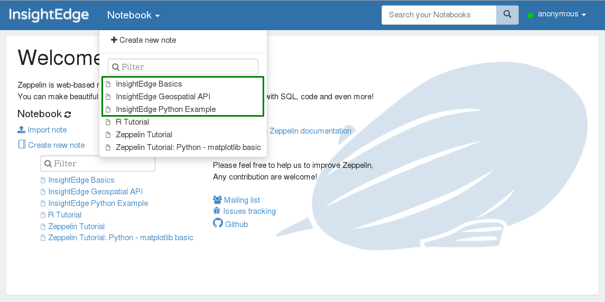

This section describes how to use the interactive Apache Zeppelin Web Notebook with
The
Run the insightedge demo command; the web notebook is started automatically at localhost:9090.
Start the web notebook manually at any time by running zeppelin.sh/cmd from the
When Apache Zeppelin is running, you can browse to localhost:9090 and start exploring the pre-built notebooks:

If you want to create a new Apache Zeppelin web notebook instead of using the example notebooks that come packaged with
Write a Spark application that reads and writes data to the data grid using the Spark context.
Write an SQL query that is interpreted by the
In order to establish the connection between Apache Zeppelin through Apache Spark and then to the data grid, each notebook should start with a paragraph that injects the
spaceName
lookupGroups
lookupLocators
These properties are injected through the following in the notebook:
InsightEdge class:
case class InsightEdgeConfig(
spaceName: String,
lookupGroups: Option[String] = None,
lookupLocators: Option[String] = None)
Apache Zeppelin mandatory initialization paragraph:
%spark
import org.insightedge.spark.implicits.all._
import org.insightedge.spark.context.InsightEdgeConfig
//spaceName is required, other two parameters are optional
val ieConfig = new InsightEdgeConfig(spaceName = "mySpace", lookupGroups = None, lookupLocators = None)
//sc is the spark context initalized by zeppelin
sc.initializeInsightEdgeContext(ieConfig)
Apache Zeppelin uses interpreters to compile and run paragraphs. The Apache Zeppelin instance that is packaged with
The JDBC interpreter connects to the data grid via a JDBC URL. To configure the URL value to point to the data grid, do the following:
In the Apache Zeppelin web interface, navigate to the Interpreters section.
Select the insightedge_jdbc interpreter, and click Edit.
Edit the default.url parameter as follows: jdbc:insightedge:spaceName=<space-name>
Save the changes you made to the interpreter.
When the JDBC interpreter is properly configured, Zeppelin paragraphs that are bound to the %insightedge_jdbc interpreter can run SQL queries directly on the data grid.
You can configure the JDBC interpreter to query multiple JDBC data sources (in addition to the default data source). You define the additional data sources in the notebook by adding the following properties to the interpreter for each data source:
<data-source-name>.driver - The class of JDBC driver applicable to the data source
<data-source-name>.url - The JDBC connection string to the data source
After saving your changes, Zeppelin paragraphs starting with %insightedge_jdbc(<data-source-name>) can run queries on the data sources that you added.
For example, let's say we want to query 3 data grid sources:
"grid_A" (this is the default data source)
"grid_B"
"grid_C"
Configure Apache Zeppelin in the interpreter section to enable querying one or more of these data sources with the
grid_A configuration:
Key = default.driver, Value = com.gigaspaces.jdbc.Driver
Key = default.url, Value = insightedge:jdbc:url:spaceName=grid_A
Paragraphs starting with %insightedge_jdbc will query Grid A.
grid_B configuration:
Key = B.driver, Value = com.gigaspaces.jdbc.Driver
Key = B.url, Value = insightedge:jdbc:url:spaceName=grid_B
Paragraphs starting with %insightedge_jdbc will query Grid B.
grid_C configuration:
Key = C.driver, Value = com.gigaspaces.jdbc.Driver
Key = C.url, Value = insightedge:jdbc:url:spaceName=grid_C
Paragraphs starting with %insightedge_jdbc will query Grid C.
The Apache Zeppelin web notebook comes with sample notes. We recommend that you review them, and then use them as a template for your own notes. There are several things you should take into account.
The data grid model can be declared in a notebook using the %define interpreter:
%define
package model.v1
import org.insightedge.scala.annotation._
import scala.beans.{BeanProperty, BooleanBeanProperty}
case class Product(
@BeanProperty @SpaceId var id: Long,
@BeanProperty var description: String,
@BeanProperty var quantity: Int,
@BooleanBeanProperty var featuredProduct: Boolean
) {
def this() = this(-1, null, -1, false)
}
%spark
import model.v1._
You can load external .JARs from the Spark interpreter settings, or with the z.load("/path/to.jar") command:
%dep
z.load("insightedge/examples/jars/insightedge-examples.jar")
For more details, refer to Zeppelin Dependency Management.
SparkContext (sc) command. If you want to redefine the model or load another .JAR after SparkContext has already started, you must reload the Spark interpreter.